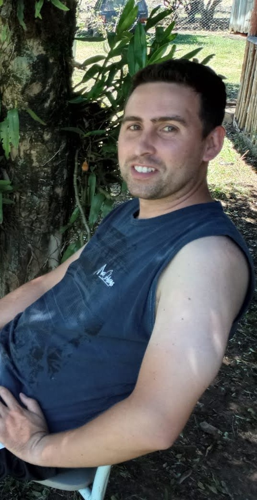

Seja bem vindo!

Meu nome é Tiago e tenho 34 anos.
Sou um programador front-end recém-formado em Análise e Desenvolvimento de Sistemas, com em média 2 anos de esperiencia em HTML, CSS, Java script, Git e GitHub e muito mais...
Durante minha formação, adquiri experiência prática e teórica em desenvolvimento web,procuro construir e otimizar interfaces de usuário responsivas e interativas.
Estou em busca de oportunidades para aplicar e expandir minhas habilidades.
Além disso, gosto de construir projetos pessoais, produzir conteúdos para minhas redes sociais.